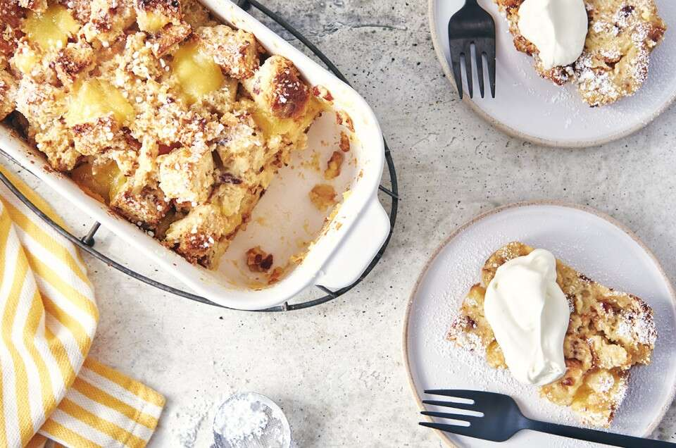

Bread Pudding- Breakfast for Dessert/Dessert for Breakfast
Is this just an excuse for dessert? Yes. Rich, delicious, perfect with coffee.

Tools
- mixing bowl
- small saucepan
- whisk
- casserole dish
- oven
Ingredients
- about 8 slices (or half a loaf) of slightly stale bread, torn into small chunks (sweet bread like brioche/challah/raisin bread works best)
- 2 tbsp butter
- 2 cups milk or cream
- 4 eggs, beaten
- 1 tsp vanilla
- 1/3 cup sugar
- pinch (1/8 tsp) salt
- optional: 1/4 tsp any spices or flavorings (cinnamon+nutmeg+clove is traditional, but anise, cocoa powder, instant coffee, and whisky are all good additions. Just not together. Pick one)
- optional: 1/2 cup mix-ins. Dried fruits, nuts, apple chunks, fresh berries, and chocolate chunks are all delicious
Directions
- Preheat oven to 350 degrees farenheit
- In a small saucepan over low heat, warm milk, butter, vanilla, sugar, flavorings, and salt until butter melts, then remove from heat and let cool
- Grease casserole dish with cooking spray or butter and fill with torn bread
- Add mix ins
- Add eggs to cooled milk and whisk until combined, then pour into dish over bread. If you've got time, let bread and eggs soak for ~15min before baking
- Bake for 35-40 minutes, or until custard has set and bread has started to brown. Serve warm or at room temperature.
makes about 6 servings